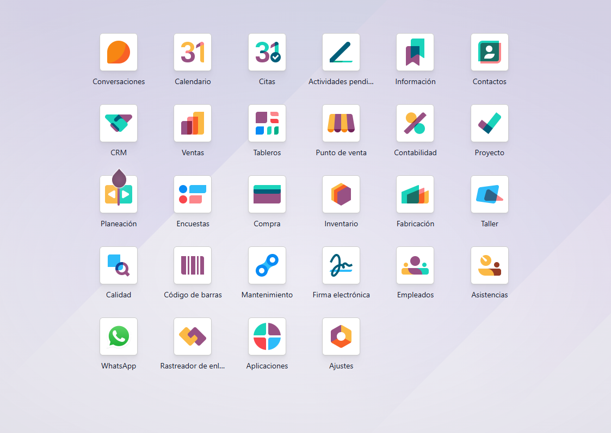

FactuMatch
Automatización contable con OCR e IA. Validación de facturas, conciliación bancaria y gestión documental.
- OCR inteligente para facturas
- Validación automática
- Conciliación bancaria
Ayudamos a empresas a optimizar sus procesos usando Odoo ERP, automatización inteligente y soluciones empresariales.
Tecnología SaaS diseñada para transformar procesos empresariales con automatización inteligente.
Automatización contable con OCR e IA. Validación de facturas, conciliación bancaria y gestión documental.
Gestión inteligente de operaciones empresariales. Automatización de workflows y seguimiento en tiempo real.
ERP agroindustrial especializado. Gestión de cultivos, producción, inventarios y trazabilidad.
Asesoría funcional, parametrización y acompañamiento empresarial con Odoo ERP. Optimizamos tus procesos de negocio.
Acompañamos a empresas en la optimización de procesos con Odoo ERP. Consultoría funcional, capacitación y mejora continua.

Asesoría experta en procesos empresariales con Odoo ERP. Diagnóstico y planificación estratégica.
Automatización de flujos de trabajo para reducir tareas manuales y mejorar la eficiencia.
Configuración funcional de Odoo ERP adaptada a la operación de tu empresa.
Formación y acompañamiento para que tu equipo adopte Odoo de manera efectiva.
Mejora continua de procesos con dashboards, KPIs y análisis de datos en tiempo real.
Acompañamiento continuo y consultoría por horas para resolver desafíos operativos.
Reducción de tareas manuales, validación inteligente de documentos y workflows automatizados.
Reconocimiento óptico de caracteres para facturas, documentos y formularios con validación automática.
Automatización de procesos contables, aprobaciones y flujos de trabajo empresariales.
Modelos de inteligencia artificial para predicción, clasificación y optimización de operaciones.
Conexión con APIs, bases de datos y servicios cloud para unificar la información empresarial.
Métricas e impacto real de la automatización empresarial en nuestros clientes.
Consultoría funcional Odoo ERP y automatización inteligente para tu empresa.
Agendar Consultoría Gratis